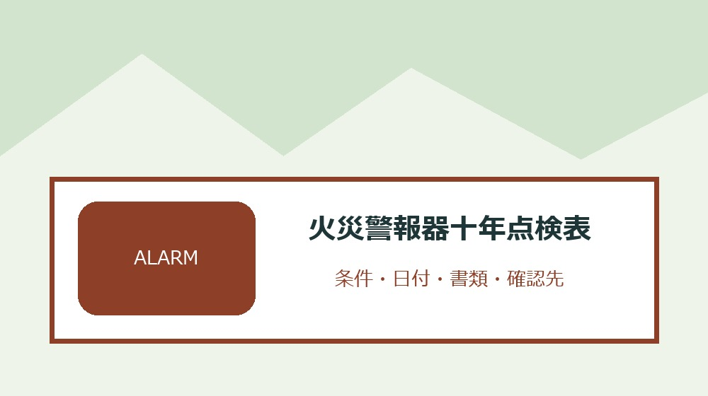
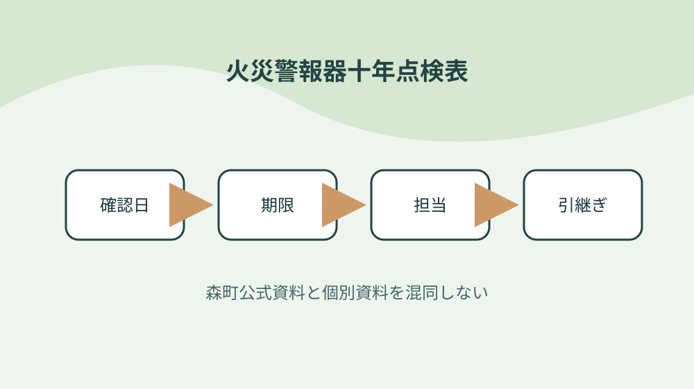

森町の住宅用火災警報器を設置年・交換目安・取付支援で点検する

結論：部屋ごとに警報器を数えることから始め、取付支援の世帯条件を確認する条件と「袋井消防本部は住宅用火災警報器の取付支援を行う」の根拠を火災警報器十年点検表へ結びます。期限と次の確認先まで一行にすれば、森町の住宅用火災警報器を設置年・交換目安・取付支援で点検する作業の取り違えを減らせます。
部屋ごとに警報器を数える
森町公式資料で確認できる事実は「袋井消防本部は住宅用火災警報器の取付支援を行う」です。部屋ごとに警報器を数えるでは、この条件を火災警報器十年点検表の一行へ写し、対象者・対象物・確認日を同じ欄に置きます。制度名だけをメモせず、どの資料のどの条件を確認したかが家族や担当者にもたどれる形にしてください。
部屋ごとに警報器を数えるを確かめるときは、「支援は購入済み機器の取り付け又は取り替えを手伝う」という公式条件と、手元の通知・領収書・型番・日付を別列にします。必要資料が揃わなければ空欄を推測で埋めず、火災警報器十年点検表へ未確認の理由と次の照会先を記します。この表の役割は結論を急ぐことではなく、森町の住宅用火災警報器を設置年・交換目安・取付支援で点検するで起きる食い違いを安全に発見することです。
火災警報器十年点検表の作業日は、①「対象は森町・袋井市の高齢者世帯」の掲載資料と更新日を見る、②部屋ごとに警報器を数えるの手元資料を照合する、③不足一点だけを窓口へ尋ねる、④回答日と担当を追記する順に進めます。共通条件だけで個別可否を断定せず、森町の住宅用火災警報器を設置年・交換目安・取付支援で点検するに関する最新の運用を実行前に確かめます。
火災警報器十年点検表を引き継ぐ欄には、「対象世帯は六十五歳以上の人だけで構成される」の確認結果、次に行うこと、期限、原本の保管場所を書きます。部屋ごとに警報器を数えるを更新したら旧版を消さず、変更理由と回答した窓口を一行添えます。担当者が替わっても、その事実をどの資料で確かめたかまで戻れるため、同じ問い合わせや書類の取り直しを減らせます。
本体の設置年月を読む
森町公式資料で確認できる事実は「対象は森町・袋井市の高齢者世帯」です。本体の設置年月を読むでは、この条件を火災警報器十年点検表の一行へ写し、対象者・対象物・確認日を同じ欄に置きます。制度名だけをメモせず、どの資料のどの条件を確認したかが家族や担当者にもたどれる形にしてください。
本体の設置年月を読むを確かめるときは、「対象世帯は六十五歳以上の人だけで構成される」という公式条件と、手元の通知・領収書・型番・日付を別列にします。必要資料が揃わなければ空欄を推測で埋めず、火災警報器十年点検表へ未確認の理由と次の照会先を記します。この表の役割は結論を急ぐことではなく、森町の住宅用火災警報器を設置年・交換目安・取付支援で点検するで起きる食い違いを安全に発見することです。
火災警報器十年点検表の作業日は、①「希望者は消防署へ来署又は電話で相談する」の掲載資料と更新日を見る、②本体の設置年月を読むの手元資料を照合する、③不足一点だけを窓口へ尋ねる、④回答日と担当を追記する順に進めます。共通条件だけで個別可否を断定せず、森町の住宅用火災警報器を設置年・交換目安・取付支援で点検するに関する最新の運用を実行前に確かめます。
火災警報器十年点検表を引き継ぐ欄には、「取付支援申請書が公開されている」の確認結果、次に行うこと、期限、原本の保管場所を書きます。本体の設置年月を読むを更新したら旧版を消さず、変更理由と回答した窓口を一行添えます。担当者が替わっても、その事実をどの資料で確かめたかまで戻れるため、同じ問い合わせや書類の取り直しを減らせます。
十年目の候補を色分けする
森町公式資料で確認できる事実は「希望者は消防署へ来署又は電話で相談する」です。十年目の候補を色分けするでは、この条件を火災警報器十年点検表の一行へ写し、対象者・対象物・確認日を同じ欄に置きます。制度名だけをメモせず、どの資料のどの条件を確認したかが家族や担当者にもたどれる形にしてください。
十年目の候補を色分けするを確かめるときは、「取付支援申請書が公開されている」という公式条件と、手元の通知・領収書・型番・日付を別列にします。必要資料が揃わなければ空欄を推測で埋めず、火災警報器十年点検表へ未確認の理由と次の照会先を記します。この表の役割は結論を急ぐことではなく、森町の住宅用火災警報器を設置年・交換目安・取付支援で点検するで起きる食い違いを安全に発見することです。
火災警報器十年点検表の作業日は、①「問い合わせ先は袋井消防本部予防課」の掲載資料と更新日を見る、②十年目の候補を色分けするの手元資料を照合する、③不足一点だけを窓口へ尋ねる、④回答日と担当を追記する順に進めます。共通条件だけで個別可否を断定せず、森町の住宅用火災警報器を設置年・交換目安・取付支援で点検するに関する最新の運用を実行前に確かめます。
火災警報器十年点検表を引き継ぐ欄には、「新築住宅は平成十八年六月から設置義務の対象」の確認結果、次に行うこと、期限、原本の保管場所を書きます。十年目の候補を色分けするを更新したら旧版を消さず、変更理由と回答した窓口を一行添えます。担当者が替わっても、その事実をどの資料で確かめたかまで戻れるため、同じ問い合わせや書類の取り直しを減らせます。
電池交換と本体交換を分ける
森町公式資料で確認できる事実は「問い合わせ先は袋井消防本部予防課」です。電池交換と本体交換を分けるでは、この条件を火災警報器十年点検表の一行へ写し、対象者・対象物・確認日を同じ欄に置きます。制度名だけをメモせず、どの資料のどの条件を確認したかが家族や担当者にもたどれる形にしてください。
電池交換と本体交換を分けるを確かめるときは、「新築住宅は平成十八年六月から設置義務の対象」という公式条件と、手元の通知・領収書・型番・日付を別列にします。必要資料が揃わなければ空欄を推測で埋めず、火災警報器十年点検表へ未確認の理由と次の照会先を記します。この表の役割は結論を急ぐことではなく、森町の住宅用火災警報器を設置年・交換目安・取付支援で点検するで起きる食い違いを安全に発見することです。
火災警報器十年点検表の作業日は、①「既存住宅を含む猶予期間は平成二十一年六月に満了」の掲載資料と更新日を見る、②電池交換と本体交換を分けるの手元資料を照合する、③不足一点だけを窓口へ尋ねる、④回答日と担当を追記する順に進めます。共通条件だけで個別可否を断定せず、森町の住宅用火災警報器を設置年・交換目安・取付支援で点検するに関する最新の運用を実行前に確かめます。
火災警報器十年点検表を引き継ぐ欄には、「本体交換の目安は設置から十年」の確認結果、次に行うこと、期限、原本の保管場所を書きます。電池交換と本体交換を分けるを更新したら旧版を消さず、変更理由と回答した窓口を一行添えます。担当者が替わっても、その事実をどの資料で確かめたかまで戻れるため、同じ問い合わせや書類の取り直しを減らせます。
作動確認日を記録する
森町公式資料で確認できる事実は「既存住宅を含む猶予期間は平成二十一年六月に満了」です。作動確認日を記録するでは、この条件を火災警報器十年点検表の一行へ写し、対象者・対象物・確認日を同じ欄に置きます。制度名だけをメモせず、どの資料のどの条件を確認したかが家族や担当者にもたどれる形にしてください。
作動確認日を記録するを確かめるときは、「本体交換の目安は設置から十年」という公式条件と、手元の通知・領収書・型番・日付を別列にします。必要資料が揃わなければ空欄を推測で埋めず、火災警報器十年点検表へ未確認の理由と次の照会先を記します。この表の役割は結論を急ぐことではなく、森町の住宅用火災警報器を設置年・交換目安・取付支援で点検するで起きる食い違いを安全に発見することです。
火災警報器十年点検表の作業日は、①「古い機器は電子部品の寿命で感知しない場合がある」の掲載資料と更新日を見る、②作動確認日を記録するの手元資料を照合する、③不足一点だけを窓口へ尋ねる、④回答日と担当を追記する順に進めます。共通条件だけで個別可否を断定せず、森町の住宅用火災警報器を設置年・交換目安・取付支援で点検するに関する最新の運用を実行前に確かめます。
火災警報器十年点検表を引き継ぐ欄には、「電池切れも感知不良の原因になる」の確認結果、次に行うこと、期限、原本の保管場所を書きます。作動確認日を記録するを更新したら旧版を消さず、変更理由と回答した窓口を一行添えます。担当者が替わっても、その事実をどの資料で確かめたかまで戻れるため、同じ問い合わせや書類の取り直しを減らせます。
購入済み機器を整理する
森町公式資料で確認できる事実は「古い機器は電子部品の寿命で感知しない場合がある」です。購入済み機器を整理するでは、この条件を火災警報器十年点検表の一行へ写し、対象者・対象物・確認日を同じ欄に置きます。制度名だけをメモせず、どの資料のどの条件を確認したかが家族や担当者にもたどれる形にしてください。
購入済み機器を整理するを確かめるときは、「電池切れも感知不良の原因になる」という公式条件と、手元の通知・領収書・型番・日付を別列にします。必要資料が揃わなければ空欄を推測で埋めず、火災警報器十年点検表へ未確認の理由と次の照会先を記します。この表の役割は結論を急ぐことではなく、森町の住宅用火災警報器を設置年・交換目安・取付支援で点検するで起きる食い違いを安全に発見することです。
火災警報器十年点検表の作業日は、①「電池だけ替えても他部品の劣化は残る」の掲載資料と更新日を見る、②購入済み機器を整理するの手元資料を照合する、③不足一点だけを窓口へ尋ねる、④回答日と担当を追記する順に進めます。共通条件だけで個別可否を断定せず、森町の住宅用火災警報器を設置年・交換目安・取付支援で点検するに関する最新の運用を実行前に確かめます。
火災警報器十年点検表を引き継ぐ欄には、「設置年月を本体又は記録で確認する必要がある」の確認結果、次に行うこと、期限、原本の保管場所を書きます。購入済み機器を整理するを更新したら旧版を消さず、変更理由と回答した窓口を一行添えます。担当者が替わっても、その事実をどの資料で確かめたかまで戻れるため、同じ問い合わせや書類の取り直しを減らせます。
取付支援の世帯条件を確認する
森町公式資料で確認できる事実は「電池だけ替えても他部品の劣化は残る」です。取付支援の世帯条件を確認するでは、この条件を火災警報器十年点検表の一行へ写し、対象者・対象物・確認日を同じ欄に置きます。制度名だけをメモせず、どの資料のどの条件を確認したかが家族や担当者にもたどれる形にしてください。
取付支援の世帯条件を確認するを確かめるときは、「設置年月を本体又は記録で確認する必要がある」という公式条件と、手元の通知・領収書・型番・日付を別列にします。必要資料が揃わなければ空欄を推測で埋めず、火災警報器十年点検表へ未確認の理由と次の照会先を記します。この表の役割は結論を急ぐことではなく、森町の住宅用火災警報器を設置年・交換目安・取付支援で点検するで起きる食い違いを安全に発見することです。
火災警報器十年点検表の作業日は、①「袋井消防本部は住宅用火災警報器の取付支援を行う」の掲載資料と更新日を見る、②取付支援の世帯条件を確認するの手元資料を照合する、③不足一点だけを窓口へ尋ねる、④回答日と担当を追記する順に進めます。共通条件だけで個別可否を断定せず、森町の住宅用火災警報器を設置年・交換目安・取付支援で点検するに関する最新の運用を実行前に確かめます。
火災警報器十年点検表を引き継ぐ欄には、「支援は購入済み機器の取り付け又は取り替えを手伝う」の確認結果、次に行うこと、期限、原本の保管場所を書きます。取付支援の世帯条件を確認するを更新したら旧版を消さず、変更理由と回答した窓口を一行添えます。担当者が替わっても、その事実をどの資料で確かめたかまで戻れるため、同じ問い合わせや書類の取り直しを減らせます。
消防署への相談事項をまとめる
森町公式資料で確認できる事実は「袋井消防本部は住宅用火災警報器の取付支援を行う」です。消防署への相談事項をまとめるでは、この条件を火災警報器十年点検表の一行へ写し、対象者・対象物・確認日を同じ欄に置きます。制度名だけをメモせず、どの資料のどの条件を確認したかが家族や担当者にもたどれる形にしてください。
消防署への相談事項をまとめるを確かめるときは、「支援は購入済み機器の取り付け又は取り替えを手伝う」という公式条件と、手元の通知・領収書・型番・日付を別列にします。必要資料が揃わなければ空欄を推測で埋めず、火災警報器十年点検表へ未確認の理由と次の照会先を記します。この表の役割は結論を急ぐことではなく、森町の住宅用火災警報器を設置年・交換目安・取付支援で点検するで起きる食い違いを安全に発見することです。
火災警報器十年点検表の作業日は、①「対象は森町・袋井市の高齢者世帯」の掲載資料と更新日を見る、②消防署への相談事項をまとめるの手元資料を照合する、③不足一点だけを窓口へ尋ねる、④回答日と担当を追記する順に進めます。共通条件だけで個別可否を断定せず、森町の住宅用火災警報器を設置年・交換目安・取付支援で点検するに関する最新の運用を実行前に確かめます。
火災警報器十年点検表を引き継ぐ欄には、「対象世帯は六十五歳以上の人だけで構成される」の確認結果、次に行うこと、期限、原本の保管場所を書きます。消防署への相談事項をまとめるを更新したら旧版を消さず、変更理由と回答した窓口を一行添えます。担当者が替わっても、その事実をどの資料で確かめたかまで戻れるため、同じ問い合わせや書類の取り直しを減らせます。
交換後の旧機器を取り違えない
森町公式資料で確認できる事実は「対象は森町・袋井市の高齢者世帯」です。交換後の旧機器を取り違えないでは、この条件を火災警報器十年点検表の一行へ写し、対象者・対象物・確認日を同じ欄に置きます。制度名だけをメモせず、どの資料のどの条件を確認したかが家族や担当者にもたどれる形にしてください。
交換後の旧機器を取り違えないを確かめるときは、「対象世帯は六十五歳以上の人だけで構成される」という公式条件と、手元の通知・領収書・型番・日付を別列にします。必要資料が揃わなければ空欄を推測で埋めず、火災警報器十年点検表へ未確認の理由と次の照会先を記します。この表の役割は結論を急ぐことではなく、森町の住宅用火災警報器を設置年・交換目安・取付支援で点検するで起きる食い違いを安全に発見することです。
火災警報器十年点検表の作業日は、①「希望者は消防署へ来署又は電話で相談する」の掲載資料と更新日を見る、②交換後の旧機器を取り違えないの手元資料を照合する、③不足一点だけを窓口へ尋ねる、④回答日と担当を追記する順に進めます。共通条件だけで個別可否を断定せず、森町の住宅用火災警報器を設置年・交換目安・取付支援で点検するに関する最新の運用を実行前に確かめます。
火災警報器十年点検表を引き継ぐ欄には、「取付支援申請書が公開されている」の確認結果、次に行うこと、期限、原本の保管場所を書きます。交換後の旧機器を取り違えないを更新したら旧版を消さず、変更理由と回答した窓口を一行添えます。担当者が替わっても、その事実をどの資料で確かめたかまで戻れるため、同じ問い合わせや書類の取り直しを減らせます。

次回点検月を家族で共有する
森町公式資料で確認できる事実は「希望者は消防署へ来署又は電話で相談する」です。次回点検月を家族で共有するでは、この条件を火災警報器十年点検表の一行へ写し、対象者・対象物・確認日を同じ欄に置きます。制度名だけをメモせず、どの資料のどの条件を確認したかが家族や担当者にもたどれる形にしてください。
次回点検月を家族で共有するを確かめるときは、「取付支援申請書が公開されている」という公式条件と、手元の通知・領収書・型番・日付を別列にします。必要資料が揃わなければ空欄を推測で埋めず、火災警報器十年点検表へ未確認の理由と次の照会先を記します。この表の役割は結論を急ぐことではなく、森町の住宅用火災警報器を設置年・交換目安・取付支援で点検するで起きる食い違いを安全に発見することです。
火災警報器十年点検表の作業日は、①「問い合わせ先は袋井消防本部予防課」の掲載資料と更新日を見る、②次回点検月を家族で共有するの手元資料を照合する、③不足一点だけを窓口へ尋ねる、④回答日と担当を追記する順に進めます。共通条件だけで個別可否を断定せず、森町の住宅用火災警報器を設置年・交換目安・取付支援で点検するに関する最新の運用を実行前に確かめます。
火災警報器十年点検表を引き継ぐ欄には、「新築住宅は平成十八年六月から設置義務の対象」の確認結果、次に行うこと、期限、原本の保管場所を書きます。次回点検月を家族で共有するを更新したら旧版を消さず、変更理由と回答した窓口を一行添えます。担当者が替わっても、その事実をどの資料で確かめたかまで戻れるため、同じ問い合わせや書類の取り直しを減らせます。
良い点
森町公式資料で確認できる事実は「問い合わせ先は袋井消防本部予防課」です。良い点では、この条件を火災警報器十年点検表の一行へ写し、対象者・対象物・確認日を同じ欄に置きます。制度名だけをメモせず、どの資料のどの条件を確認したかが家族や担当者にもたどれる形にしてください。
良い点を確かめるときは、「新築住宅は平成十八年六月から設置義務の対象」という公式条件と、手元の通知・領収書・型番・日付を別列にします。必要資料が揃わなければ空欄を推測で埋めず、火災警報器十年点検表へ未確認の理由と次の照会先を記します。この表の役割は結論を急ぐことではなく、森町の住宅用火災警報器を設置年・交換目安・取付支援で点検するで起きる食い違いを安全に発見することです。
火災警報器十年点検表の作業日は、①「既存住宅を含む猶予期間は平成二十一年六月に満了」の掲載資料と更新日を見る、②良い点の手元資料を照合する、③不足一点だけを窓口へ尋ねる、④回答日と担当を追記する順に進めます。共通条件だけで個別可否を断定せず、森町の住宅用火災警報器を設置年・交換目安・取付支援で点検するに関する最新の運用を実行前に確かめます。
火災警報器十年点検表を引き継ぐ欄には、「本体交換の目安は設置から十年」の確認結果、次に行うこと、期限、原本の保管場所を書きます。良い点を更新したら旧版を消さず、変更理由と回答した窓口を一行添えます。担当者が替わっても、その事実をどの資料で確かめたかまで戻れるため、同じ問い合わせや書類の取り直しを減らせます。
注文したい点
森町公式資料で確認できる事実は「既存住宅を含む猶予期間は平成二十一年六月に満了」です。注文したい点では、この条件を火災警報器十年点検表の一行へ写し、対象者・対象物・確認日を同じ欄に置きます。制度名だけをメモせず、どの資料のどの条件を確認したかが家族や担当者にもたどれる形にしてください。
注文したい点を確かめるときは、「本体交換の目安は設置から十年」という公式条件と、手元の通知・領収書・型番・日付を別列にします。必要資料が揃わなければ空欄を推測で埋めず、火災警報器十年点検表へ未確認の理由と次の照会先を記します。この表の役割は結論を急ぐことではなく、森町の住宅用火災警報器を設置年・交換目安・取付支援で点検するで起きる食い違いを安全に発見することです。
火災警報器十年点検表の作業日は、①「古い機器は電子部品の寿命で感知しない場合がある」の掲載資料と更新日を見る、②注文したい点の手元資料を照合する、③不足一点だけを窓口へ尋ねる、④回答日と担当を追記する順に進めます。共通条件だけで個別可否を断定せず、森町の住宅用火災警報器を設置年・交換目安・取付支援で点検するに関する最新の運用を実行前に確かめます。
火災警報器十年点検表を引き継ぐ欄には、「電池切れも感知不良の原因になる」の確認結果、次に行うこと、期限、原本の保管場所を書きます。注文したい点を更新したら旧版を消さず、変更理由と回答した窓口を一行添えます。担当者が替わっても、その事実をどの資料で確かめたかまで戻れるため、同じ問い合わせや書類の取り直しを減らせます。
対案・結論
火災警報器十年点検表は、全項目を一度で完成させるより、「部屋ごとに警報器を数える」から確定する方が実用的です。公式条件、手元資料、窓口回答を別欄にし、支援は購入済み機器の取り付け又は取り替えを手伝うという事実と個別事情の食い違いを消さずに残してください。
取付支援の世帯条件を確認するに費用や契約が伴う場合は、対象・期限・事前手続を再確認してから進めます。森町の共通案内だけで個別案件を断定せず、問い合わせ先は袋井消防本部予防課という確認済み情報と手元資料を示して尋ねます。
結論は、次回点検月を家族で共有するまでを今日の一行にし、次の確認日を決めることです。火災警報器十年点検表があれば、森町の住宅用火災警報器を設置年・交換目安・取付支援で点検するの作業を家族や社内担当が同じ根拠から続けられます。
設置年月を本体又は記録で確認する必要があるという条件が更新された場合は旧版を削除せず、変更日と採用理由を記します。火災警報器十年点検表に履歴が残れば、古い書類や判断を使った理由も後から説明できます。
大石の視点
ここまでの「袋井消防本部は住宅用火災警報器の取付支援を行う」などの制度条件は森町公式資料で確認できる事実です。以下は、私、大石浩之が火災警報器十年点検表を運用するためにすすめる方法であり、森町や関係機関の公式見解ではありません。
私は火災警報器十年点検表を紙一枚から始め、本体の設置年月を読むの原本を動かさず、写しや写真へ番号を付ける方法を勧めます。森町の住宅用火災警報器を設置年・交換目安・取付支援で点検するの確認で原本を持ち歩く回数を減らせるからです。
消防署への相談事項をまとめるに未確認欄が残っても失敗扱いしません。確認先と期限が書かれた未確認欄は、新築住宅は平成十八年六月から設置義務の対象を根拠なく個別案件へ当てはめるより価値があります。
最後に、火災警報器十年点検表に含む個人情報や事業情報は共有範囲を決めます。次回点検月を家族で共有するための内部版と外部提出版を同じファイルにせず、必要部分だけを渡せる構成にしてください。
よくある質問
火災警報器十年点検表で最初に確認することは何ですか。
対象者・対象物、基準日、手元資料、森町公式の条件を一行にします。袋井消防本部は住宅用火災警報器の取付支援を行うという共通条件を起点にしつつ、個別の可否は資料と窓口回答で確定します。
資料が足りないまま火災警報器十年点検表を作れますか。
作れます。十年目の候補を色分けするに不足があれば未確認と記し、必要資料、確認先、確認期限を残します。推測で埋めないことが、火災警報器十年点検表から安全に作業を再開する条件です。
森町公式ページを保存すれば再確認は不要ですか。
設置年月を本体又は記録で確認する必要があるなどの条件は変わることがあります。火災警報器十年点検表へURL、ページ名、確認日を残し、取付支援の世帯条件を確認するを実行する直前に現行案内を再確認してください。
火災警報器十年点検表を家族や担当者へ渡すとき何を添えますか。
次回点検月を家族で共有するため、確認済み事実、未確認事項、期限、次の担当、原本の保管場所、町へ尋ねた日と回答を添えます。火災警報器十年点検表に含む個人情報は渡す相手と保管方法を限定します。
公式情報源
- 住宅用火災警報器の取り付け支援（2026年8月19日確認）
- 住宅用火災警報器の交換（2026年8月19日確認）
最終確認日：2026-08-19 ／ 公表事実と執筆者の解釈・意見を分けて記載しています。